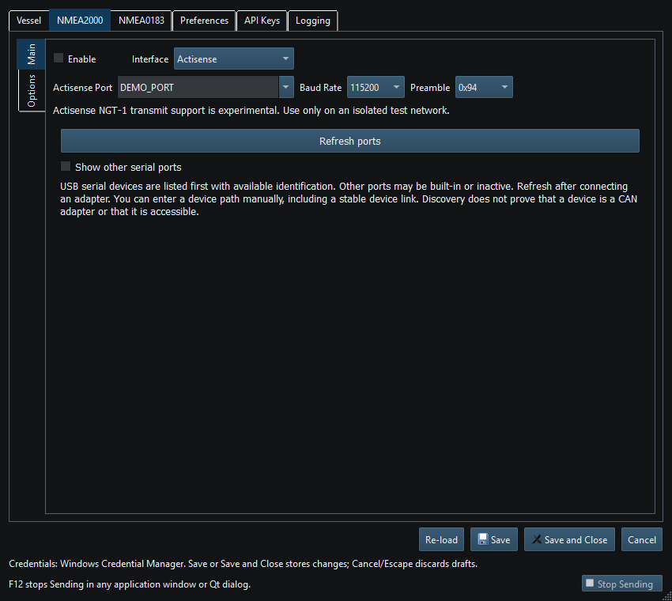

Actisense NGT-1 reception is supported. Outbound behavior has an unresolved corruption issue, so the application intentionally distinguishes Release from Debug.
| Build | Policy |
|---|---|
| Release | RX-only; ordinary TX disabled |
| Debug | Ordinary TX experimental; isolated test network only |
| Both | Active chartplotter route service excluded |
Release builds receive only; selecting Actisense does not enable Sending. Debug transmission is experimental because outgoing data can be corrupted. Active chartplotter route requests are disabled in both builds.
For ordinary transmission, choose another supported output. Do not change baud, framing or instrument values to work around corrupted Actisense output.

Figure 70. Actisense serial and framing settings in Setup. Click to enlarge.
NMEA2000 Overview · NMEA0183 Overview · Network NMEA2000 · SocketCAN · CANable SLCAN · Waveshare USB-CAN-A · Signal K · Device Discovery and Diagnostics · Connection Troubleshooting · Enable, Dispatch and Sending · Route Overview · Engineering Units